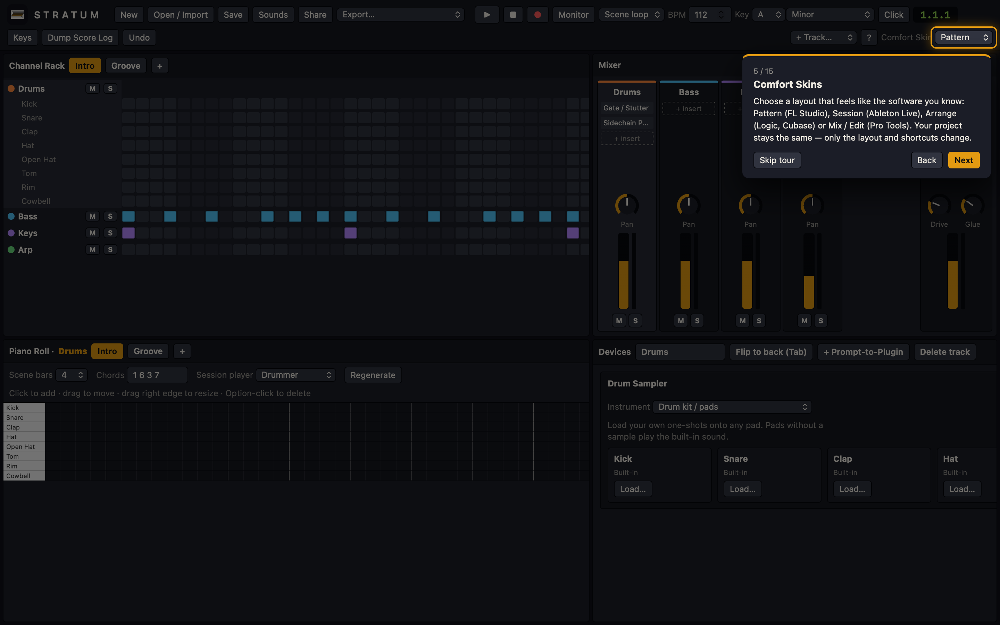
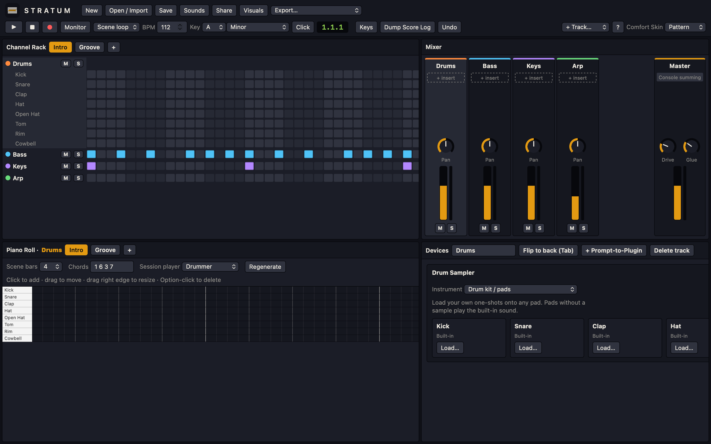
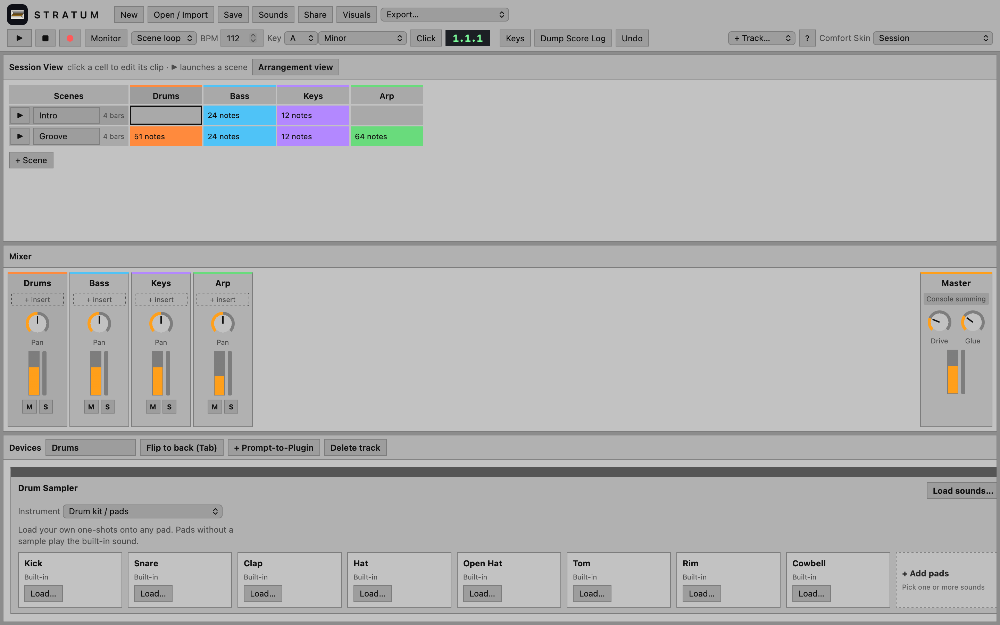
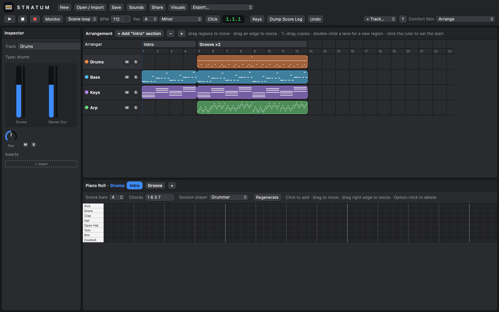
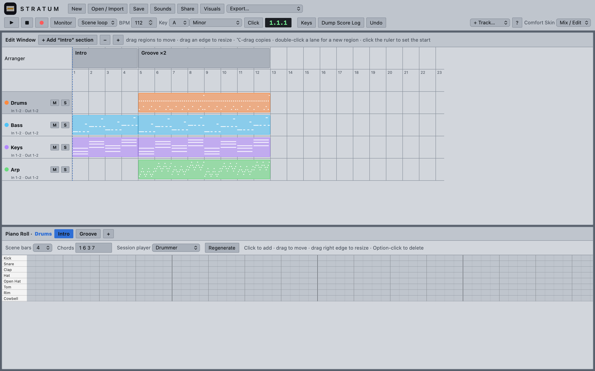
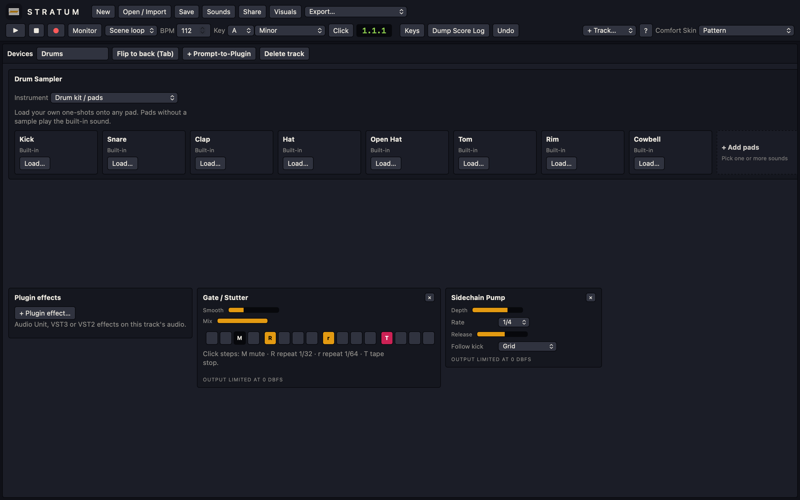
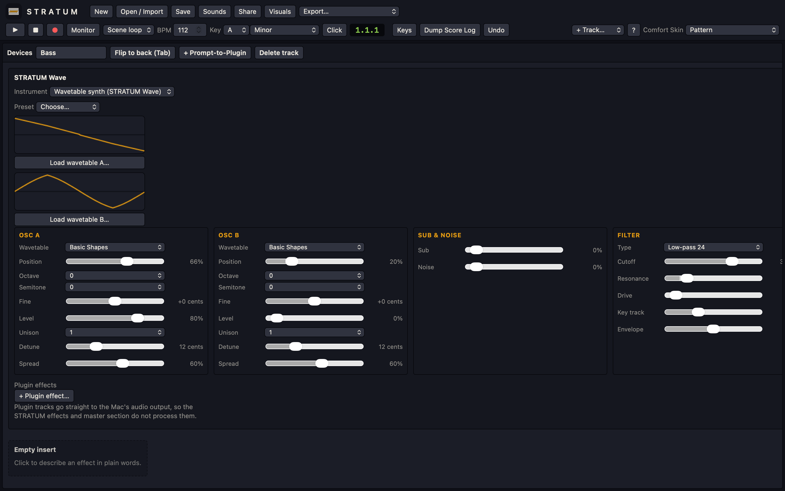
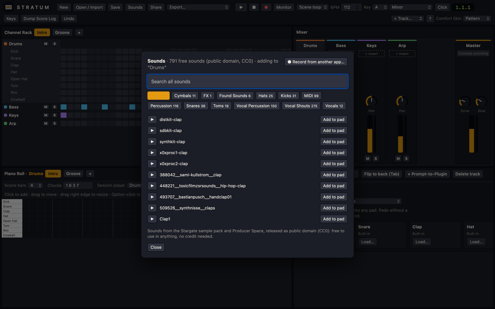
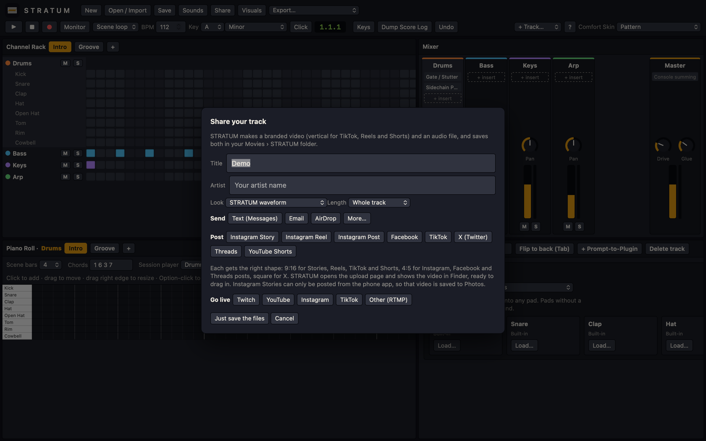

Alpha v9 · for macOS 12 or later
Everything in STRATUM, where to find it, what it does, and how it compares with the music software you may already use.
STRATUM is a music production app for the Mac. It plays and records audio, runs software instruments and effects — its own, and the Audio Unit, VST3 and VST2 plugins installed on your Mac — and opens projects from FL Studio, Ableton Live, Logic Pro and Reason.
STRATUM opens with a short demo song and asks whether you want a tour. The tour highlights each part of the window and lets you try Play and the sound library as you go. You can take it again any time from Help › Take the Tour.

12The window is a bar of controls along the top and a set of panels below. Which panels you see, and where, depends on the Comfort Skin (Chapter 3); this is the Pattern skin.

1234567891011A Comfort Skin rearranges the window and changes the keyboard shortcuts so STRATUM feels like the software you are used to. The project itself does not change — switch skins as often as you like from the Comfort Skin menu at the top right.
| Skin | Feels like | What you see |
|---|---|---|
| Pattern | FL Studio | Channel Rack with step grid, Mixer, Piano Roll and Devices; F5 and F7 switch the lower panel to the Playlist or Piano Roll. |
| Session | Ableton Live | Scenes and clips in a grid, the Mixer, and clip or device view at the bottom (⇧Tab). |
| Arrange | Logic Pro, Cubase, Studio One | Inspector on the left, tracks and regions on a timeline, editor or mixer below. |
| Mix / Edit | Pro Tools | Separate Edit and Mix windows (⌘=). |

123
123
12Save writes a .stratum file that contains everything, including recorded and imported audio, so it can be sent to someone else as a single file. Open / Import (⌘O) opens STRATUM projects and brings in work from other software:
| File | What comes in | What doesn't |
|---|---|---|
FL Studio .flp or zipped loop package | Tempo, channels, patterns, notes, the playlist, volume and pan, sampler and audio-clip samples (found on your Mac, in the zip, or via Missing samples), volume and pan automation. | FL Studio's own instruments (FLEX, Sytrus, 3x Osc…) play on stand-in sounds; mixer effects; tempo in some FL 25 projects. |
Logic Pro .logicx (or a zip of one) | Tempo, key, tracks by name, MIDI regions with notes in place, Quick Sampler samples with their root key, bounced audio. | Mixer levels, effects, automation; Logic's own synths. |
Ableton Live .als | Tempo, tracks, MIDI clips and arrangement, volume and pan. | Devices, samples and automation. |
Reason .reason | Tempo, tracks, note clips, audio-track recordings. | Rack devices and their samples (bounce them to audio in Reason first). |
MIDI .mid | Every track's notes and the tempo. | — |
| Audio (WAV, AIFF, MP3, M4A, FLAC) | A new audio track, stretched to the song tempo when its own tempo is detected. | — |
If a third-party plugin a project used is installed on your Mac, STRATUM puts it back on its track (with its default sound).
Send STRATUM projects as .stratum files, and other people's FL Studio projects as zipped loop packages — those carry their samples.
Add tracks with + Track. Every note track has an Instrument menu at the top of its Devices panel, so the same notes can be played by any sound:
| Instrument | What it is |
|---|---|
| Built-in synth | Two oscillators, a filter and an envelope. Quick and light. |
| Wavetable synth (STRATUM Wave) | STRATUM's full synthesizer — see Chapter 6. |
| My own sample… | Plays any sound file across the keys from its root note, with an optional loop. |
| Drum kit / pads | Eight pads with built-in sounds; load your own one-shots onto any pad, or add more pads. |
| Plugin… | Any Audio Unit, VST3 or VST2 instrument installed on your Mac (Chapter 17). |

12STRATUM Wave is a wavetable synthesizer, in the same family as Serum, Vital and Pigments. A wavetable is a series of single waveforms; the Position control sweeps through them, which is what makes wavetable sounds move. Choose Wavetable synth (STRATUM Wave) in a track's Instrument menu.

123Mod envelope and LFO can move the filter cutoff and the wavetable position; the LFO can follow the song tempo.
| Section | Controls |
|---|---|
| Osc A / Osc B | Wavetable (nine built in, or your own), Position, Octave, Semitone, Fine, Level, Unison (1–8 voices), Detune, Spread (stereo width). |
| Sub & Noise | A sine an octave below, and white noise. |
| Filter | Off, low-pass 12 or 24, high-pass, band-pass; Cutoff, Resonance, Drive, Key track, Envelope amount. |
| Amp / Mod Envelope | Attack, Decay, Sustain, Release. The mod envelope can also move each oscillator's position. |
| LFO | Sine, triangle, saw, square or random; free rate or synced from 4 bars to 1/16 triplets; to cutoff, position, pitch (vibrato) and volume. |
| Voice | Poly, Mono or Legato, Glide, Velocity sensitivity, Volume. |
For a wobble bass, load the Wobble Bass preset and change LFO › Sync between 1/4, 1/8 and 1/16 to change the wobble speed in time with the song.
STRATUM has two ways of playing, chosen with the Scene loop / Song menu:
In the timeline, drag regions to move them, drag their right edge to lengthen or loop them, ⌘E splits at the playhead and ⌘D duplicates. Section buttons move, duplicate or delete whole sections.
Automation: volume and pan automation imported from other software plays in Song mode; the Inspector shows a track's automation and can clear it. Drawing your own automation is planned for a later version.
STRATUM removes the audio interface's delay from recordings automatically, so takes line up with the beat.
Effects are added in the Devices panel. STRATUM's own effects run in its audio engine; plugin effects run in the Mac's plugin engine.
The signal path of a track. A track with any plugin on it — including STRATUM Wave, STRATUM Tune and Airwindows — plays through the plugin engine instead and skips STRATUM's own effects and the master section.
Click + Prompt-to-Plugin and describe the effect you want in plain words — “dusty lo-fi tape with a little room”, “sidechain pump”, “stutter”. STRATUM builds a chain of effects to match and shows a knob for each setting.
| Stock effect | Controls |
|---|---|
| High-pass / Low-pass | Cutoff (and Resonance) |
| Compressor | Amount |
| Saturation | Drive, Tone |
| Bit Crusher | Crush |
| Tape Wobble | Rate, Depth |
| Tone | Bright |
| Chorus / Phaser | Rate, Depth, Mix |
| Tremolo | Rate, Depth |
| Delay | Time, Feedback, Mix |
| Reverb | Size, Mix |
| Dust & Hiss | Level |
| Sidechain Pump | Depth, Rate (1 bar to 1/16), Release, Follow (grid or kick-drum hits) |
| Gate / Stutter | 16-step pattern, Smooth, Mix |
508 Airwindows effects are built in — reverbs, tape, saturation, console emulation, EQs, compressors, clippers and more. Choose + Plugin effect…; Airwindows effects are listed with their category, and the recommended ones come first. Their controls appear in the Devices panel.
Pitch correction for vocals and other single-note parts. It starts in the song's key and scale; Retune speed runs from instant (the robotic effect) to natural, with Amount and Mix.
Press Tab to flip the Devices panel round. Patch an LFO's CV output into an effect's input to move that setting in time — like the back of a Reason rack.
Click Sounds to browse 791 free sounds — kicks, snares, claps, hats, cymbals, toms, percussion, found sounds, vocal shouts and vocal percussion — and 99 MIDI chord, bass and piano kits. They are public domain (CC0): use them in anything, with no credit needed.

1Choose File › Record from Another App… or the button at the top of the Sounds browser. Pick the app (a web browser, a music player), choose where the sound goes — a new audio track, the sampler or a drum pad — press Record and play the sound in that app. Only that app is recorded, and silence at both ends is trimmed. The first time, macOS asks you to allow STRATUM under Privacy & Security › Screen & System Audio Recording. Only record sounds you have the right to use.
Each track has a volume fader, pan knob, mute (M) and solo (S). The Master strip has Drive (gentle console-style saturation) and Glue (bus compression). Each effect chain and the master end in a limiter, so STRATUM's own output doesn't clip.
Select an audio clip and press Separate stems (AI) in its clip settings. STRATUM separates the audio into drums, bass, vocals and other instruments on four new tracks, using the HT-Demucs model on your Mac — nothing is uploaded. This needs an Apple silicon Mac and can take about as long as the audio itself.
Export saves a WAV mixdown, a MIDI file, or a DAWproject file for other DAWs. Share makes a STRATUM-branded video and an audio file of the whole track or its first 15, 30 or 60 seconds, saves them in Movies › STRATUM, and sends them:

1| Destination | Video shape | How |
|---|---|---|
| Messages, AirDrop | 9:16 | opens with the video attached |
| audio file | opens with the audio attached | |
| Instagram Story | 9:16, up to 60 s | saved to Photos to post from your phone |
| Instagram Reel, TikTok, YouTube Shorts | 9:16 | opens the upload page; the video is selected in Finder |
| Instagram Post, Facebook, Threads | 4:5 | opens the upload page |
| X (Twitter) | square, up to 2:20 | opens the post composer |
The Go live row in the Share window streams your session as you work. Viewers see the STRATUM window and, if you tick Show my camera in a box, your camera in a small box beside the window (the window shrinks a little to make room, so nothing is covered). They hear whatever your Mac plays, plus your microphone if you add it. Pick a platform, paste the server URL and stream key it gives you, and press Go live. A red ● LIVE timer appears at the top of the window. Press it to end the stream.
| Platform | Where to find the server URL and stream key |
|---|---|
| Twitch | Creator Dashboard › Settings › Stream (STRATUM fills in the server) |
| YouTube | YouTube Studio › Create › Go live › Stream (STRATUM fills in the server) |
| instagram.com on a computer › Create › Live video; press Go live in Instagram once STRATUM is streaming | |
| TikTok | LIVE Center or TikTok LIVE Studio, for accounts with LIVE access |
| Other (RTMP) | any service that gives a server URL and stream key: Kick, Facebook Live, Restream… |
Tick Remember for next time to keep the key in your Mac's Keychain. Keep your stream key private: anyone who has it can stream to your channel. If you stream with OBS today, STRATUM does that job on its own, sending 720p video at 30 frames a second.
Most ideas you know have a home in STRATUM. Choose the matching Comfort Skin first, then use this table to find things.
| You know… | In STRATUM |
|---|---|
| FL Studio Channel Rack, step sequencer | Pattern skin › Channel Rack step grid |
| FL Studio Playlist | Song mode timeline (F5) |
| FL Studio patterns | Scenes |
| FL Studio mixer inserts | Devices panel effects |
| FL Studio Fruity Edison / slicing | Stems and the sampler |
| Ableton Live Session View | Session skin clip grid |
| Ableton Arrangement View | Song mode timeline |
| Ableton devices and racks | Devices panel; Prompt-to-Plugin chains |
| Ableton Simpler | My own sample / drum pads |
| Ableton Wavetable | STRATUM Wave |
| Logic Pro Tracks area, regions | Arrange skin |
| Logic Quick Sampler, Drum Machine Designer | My own sample, Drum kit / pads |
| Logic Alchemy, Vital, Serum | STRATUM Wave |
| Logic Flex Pitch / Auto-Tune | STRATUM Tune |
| Logic Step Sequencer | Pattern skin step grid; Gate / Stutter |
| Pro Tools Edit and Mix windows | Mix / Edit skin (⌘=) |
| Pro Tools playlists and comping | Takes and comp lanes |
| Reason rack and back panel cables | Devices panel; Tab flips it to patch LFOs |
| Reason Kong | Drum kit / pads |
| Reason Europa | STRATUM Wave |
| GarageBand Smart Controls | Device knobs and plugin controls |
| Kickstart, LFO Tool | Sidechain Pump |
| Gross Beat, Effectrix | Gate / Stutter |
Shortcuts change with the Comfort Skin so they match the software it imitates. Press ? in STRATUM to see the current set.
| Key | Does |
|---|---|
| Space | Play / stop |
| Tab | Flip the rack to its back panel |
| ⌘ z | Undo |
| ⌘ s | Save project |
| ⌘ o | Open / import |
| Backspace | Delete the selected note or region |
| ⌘ e | Split region at the playhead |
| ⌘ d | Duplicate region or scene |
| Key | Does |
|---|---|
| l | Pattern / Song mode |
| F5 | Playlist |
| F7 | Piano roll |
| = | Next pattern |
| - | Previous pattern |
| ⌘ b | Duplicate pattern |
| r | Record |
| Key | Does |
|---|---|
| ⇧ Tab | Clip view / device view |
| ⌘ ⇧ t | Insert MIDI track |
| ⌘ t | Insert audio track |
| ⌘ i | Insert scene |
| ⌘ d | Duplicate scene |
| F9 | Record |
| F10 | Session / Arrangement view |
| Key | Does |
|---|---|
| Enter | Go to beginning |
| p | Piano roll |
| x | Mixer |
| b | Devices |
| k | Metronome |
| r | Record |
| ⌘ t | Split region at the playhead |
| m | Mute track |
| s | Solo track |
| ⌘ ⌥ s | New software instrument track |
| ⌘ ⌥ a | New audio track |
| Key | Does |
|---|---|
| Enter | Return to zero |
| ⌘ = | Toggle Mix / Edit windows |
| ⇧ m | Mute track |
| ⇧ s | Solo track |
| ⌘ ⇧ n | New track |
| 7 | Click on / off |
| F12 | Record |
STRATUM finds the Audio Unit, VST3 and VST2 plugins installed on your Mac. Choose Plugin… in a track's Instrument menu for an instrument, or + Plugin effect… for an effect on any track.
/Library/Audio/Plug-Ins/VST3 and ~/Library/Audio/Plug-Ins/VST3; VST2 in the matching VST folders.Plugins run inside STRATUM, so a faulty plugin can close the app. Save often when trying a new plugin.
Airwindows Consolidated (MIT) · Steinberg VST3 SDK (MIT) · ONNX Runtime (MIT) · HT-Demucs (MIT) · Stargate sample pack and Producer Space sounds (CC0). Licence files are inside the app.